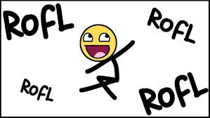
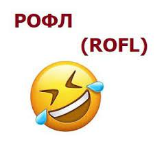

Рофл — что это такое на языке молодежи и что значит рофлить на молодежном сленге? За последние несколько лет данный вопрос стал возникать все чаще.
На самом деле причина в том, что современное общество активно практикует акронимы, условные обозначения или сокращения слов, а также словосочетаний в процессе разговора или коммуникации в мессенджерах, что значительно упрощает диалог с оппонентом и экономит время двух сторон.
